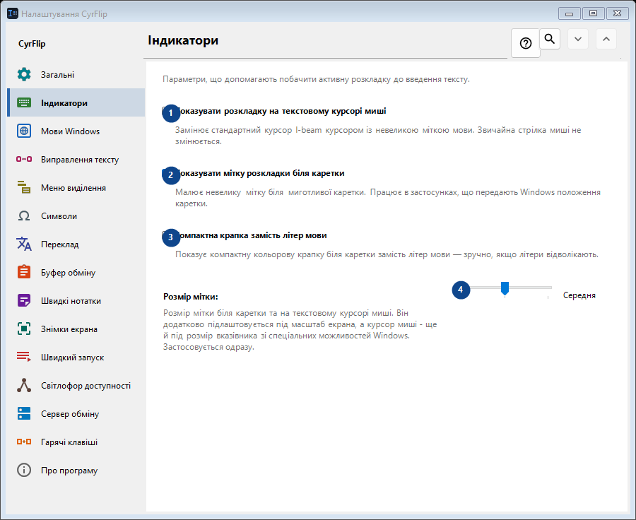
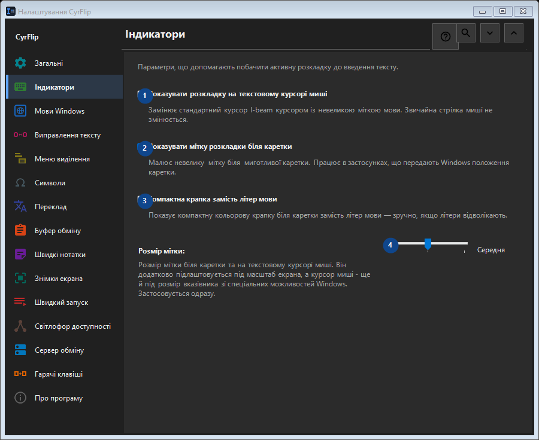

Індикатори
Для чого це вікно
Параметри, що допомагають побачити активну розкладку до введення тексту.


Порядок дій
Налаштування застосовуються одразу. Обов’язкового порядку немає; користуйтеся групами нижче.
Елементи
1. Показувати розкладку на текстовому курсорі миші
Замінює стандартний курсор I-beam курсором із невеликою міткою мови. Звичайна стрілка миші не змінюється.
Ваші сполучення клавіш2. Показувати мітку розкладки біля каретки
Малює невелику мітку біля миготливої каретки. Працює в застосунках, що передають Windows положення каретки.
Ваші сполучення клавіш3. Компактна крапка замість літер мови
Показує компактну кольорову крапку біля каретки замість літер мови — зручно, якщо літери відволікають.
Ваші сполучення клавіш4. Розмір мітки
Виберіть або введіть значення для сусіднього підпису. Перевірте його перед продовженням.
Ваші сполучення клавіш